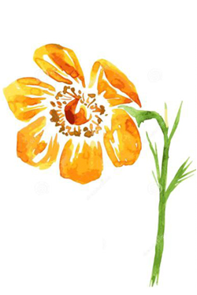
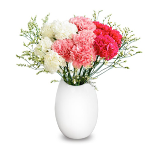

--------------------------------------------------------
前言
成果展示
一、解决那些打印难题？
二、现有主流打印插件
1.printThis
2.jQuery.print
3.Lodop
4.其它各种Web打印控件
三、好戏开始
1.技术要点
2.实现思路
3.实现过程
4.完整代码
总结
| HTML打印 | Table | 带颜色 | 加粗 | Strivy |
| rowspan跨行(内容纯属虚构) | 全面、系统的解决HTML各种打印难题。JS浏览器原生打印，保持原文css样式。 | table 并列colspan、并行rowspan，嵌套表格原样输出 | 自定义页面设置，自定义页眉页脚位置、边距 | 内容、图片、表格跨页断裂封边 |
| The floorboard of all a flower pistil. Can be composed of one or more pistils. known as apocarpous gynoecium and vice if syncarpous is called for compound pistil. Pistil viscous top known as the stigma, the pollen receptor. Style connecting the stigma and ovary, pollen grains germinated pollen tubes enter the ovary of the channel. | Pedicels (stalks) | Receptacle | Composition of pistil reproductive organs known as carpels, including ovary, and locule have ovule (containing the female gametes). A pistil may consist of more than one carpel, in this case, if each carpel separation form free of simple pistil, | |
| 一花一世界。 一朵盛开的花，是一株怒放的生命。 | 一个人在这静静的宽阔的花海里，心情也格外地舒畅和宽广，我脉脉地允吸着这国色天香的芬芳， 轻松的喘息着，使我的大脑进入了无限的沉思和瑕想。金黄色的油菜花虽然一年只开一次， 开花时间短暂，它却给人们年年演驿着许多浪漫人生的故事。小时候，我的母亲在农村小学教书。 | 油菜一年种植一次，每年的冬天下种，第二年的春天开花，我也伴随着油菜花一年一年的长大，在我的童年的记忆里。 | 在那个时候每个家庭只有靠饲养些家禽添补营养改善生活。 | 快乐地张合着它的口器，挥舞着它的六只小腿，不分昼夜地不辞辛劳地在油菜花田里授粉踩蜜。 我跟随着母亲在农村生活，在农村长大，对油菜花也十分熟悉和了解 |
| 在大自然中有许许多多的花．有人喜欢绚丽、芬芳、雅洁的玫瑰，喜欢富贵荣华的牡丹，喜欢冰雪独放的梅花。 因为它是自然界中最平凡最平常的一种花，它是纵多花海中一朵朵、一簇簇普普通通的一朵最不起眼的花。 它的生命力极强，分布广阔，北起黑龙江，南至海南，西起新疆，东至沿海各省，不论是海拔4000米以上的青藏高原，还是地势低平的长江中下游平原， 播种在哪里就能在哪里生根开花结果。 阳春三月间，是百花盛开、百花怒放、百花争艳的季节，也是观花赏花的季节。 这时候，只要你去祖国的南方，无论你是座火车、乘汽车，渡轮船，去探亲、旅游、祭祖，还是去乡村踏青，你就会被漫山遍野的一片片， 一波波流淌的浪花所吸引，你就会被眼前漫无边际的五颜十色的花海所感染，你就会被身边无边无际的金黄色的层层黄花所包围，这就是乡村的油菜花。 我喜欢油菜花，喜欢她那种强烈的淡淡的金黄色的色彩，喜欢她那种宽阔恢宏的气慨，喜欢她那种朴面而来的一阵阵缕缕清香。当太阳出来的时候， 你站在高高的田坎上，这时候你可看见，那田野里一丛丛，一族族，一片片铺天盖地的金黄色的油菜花，与天地相连，把大地构成一幅幅壮观多彩的图画， 当偶尔一阵微风吹来，它似海天一色的一望无际的茫茫汪洋，金波闪烁，又像一块块金黄色的地毯。这时候乡村间的阡陌小路，溪河塘坝，鸡狗牛羊什么都看不见了， 都被这茫茫的油菜花所淹没。远处田野里竖起的现代具有古代风味的乡村建筑，在金黄色的油菜花的晖映下， 构成了一幅幅美丽的图画。你再仔细观察，美丽的五颜六色的蝴蝶在金黄色的舞台上，跳着柔和而优美的舞姿。 它们一会儿在空中悄悄飞旋，一会儿静静地停留在油菜花上，这金黄色的油菜花成了蝴蝶的天堂。 油菜花的美丽也吸引着成千上万的“打工者”——蜜蜂，蜜蜂们迅速地扇动着它的翅膀，转动它的复眼， | ||||
Branchlets connecting stems, but also stems and flowers connected to the channel, and support the flowers.
Is a slightly inflated part of the tip of the flower stalk, having a calyx, corolla, and other parts, it has a variety of shapes.
The outer flowers composed of abnormal leaf, green sepals; often, from gamosepalous calyx, and epicalyx. Protect the infant flower.
Spend the second round of abnormal leaf, composed of several petals; often a variety of color and fragrance. With polypetalous flowers, gamopetalous. Can attract insects for pollination, and to protect the stamens and pistil.
Collectively, calyx and corolla. Usually divided into two flowers, flowers monochlamydeous, achlamydate (nakedflower) three.
All of the stamens in a flower, in general, there are a variety of types, but each stamen structure is as follows: stigma anther and style, filaments, the petals, sepals, ovule, ovary, receptacle and pedicel
The floorboard of all a flower pistil. Can be composed of one or more pistils. Composition of pistil reproductive organs known as carpels, including ovary, and locule have ovule (containing the female gametes). A pistil may consist of more than one carpel, in this case, if each carpel separation form free of simple pistil.
页面其它段落
你要是愿意，我就永远爱你，你要不愿意，我就永远相思。——王小波
不要用耳朵恋爱，真正对你好的人全在细节里。选一个人，不是看他有多好，而是看他对你有多好。
人生的旅程就是这样，用大把的时间迷茫，在几个瞬间成长。——瑞卡斯
事不能拖，话不能多，人不能作。与你无关的事，别问，别想，别多嘴。
遇见你以后，理想不再是骑马喝酒闯天涯，而是无论多晚，我都要回家。